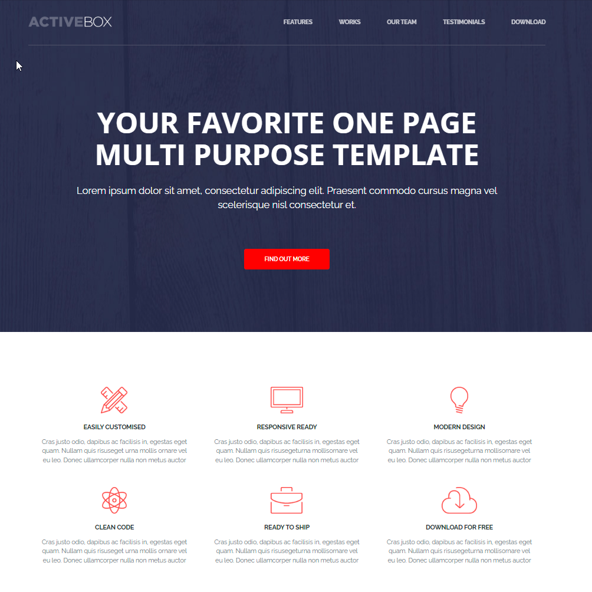

Activebox
Первый проект. Делался для себя, изучение верстки как таковой, первое бургер меню на JS. Работа проверенна и сделана по БЭМУ, прошла полную проверку на CSS syntax validator и HTML syntax validator. Сайт выполнин в полной адаптации к любому устройству.